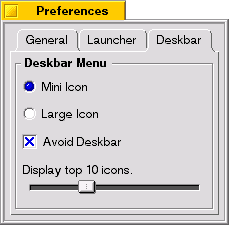

●
Preferences
Setup General Settings.
- Expire after n days
- Expire application launch log after n days.
- Show...
- Show whether Floating Launcher or Deskbar Menu.
Setup Floating Launcher.
- Mini Icon/Large Icon
- Icon size.
- Always on Top
- Check this box, Floating Launcher always display on top of Desktop.
- Lock
- Check this box, Window Tab and Resize Tab will be locked.

Setup Deskbar Menu.
- Mini Icon/Large Icon
- Icon size.
- Avoid Deskbar
- Check this box, Deskbar Menu will display not to cover Deskbar.
- Display top n icons.
- Display n icons under top of menu.
|